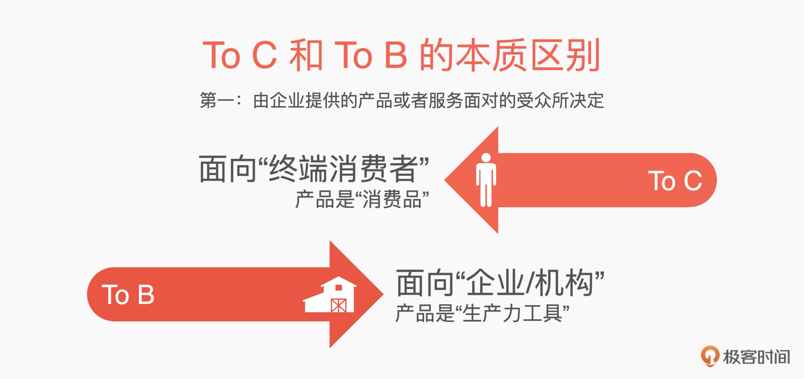
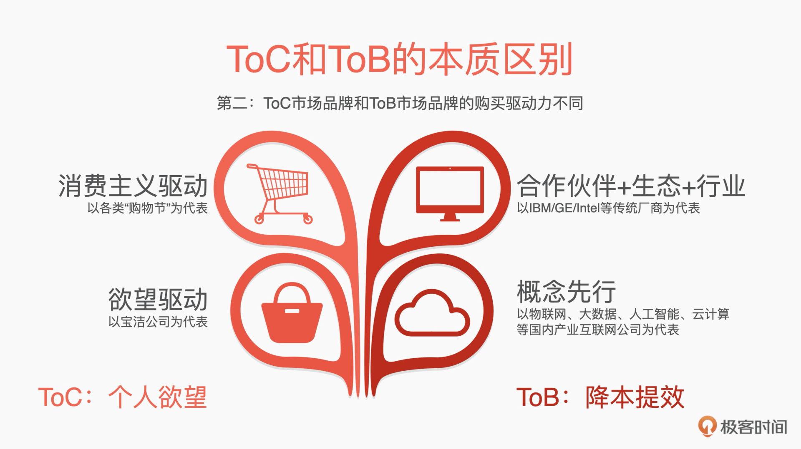
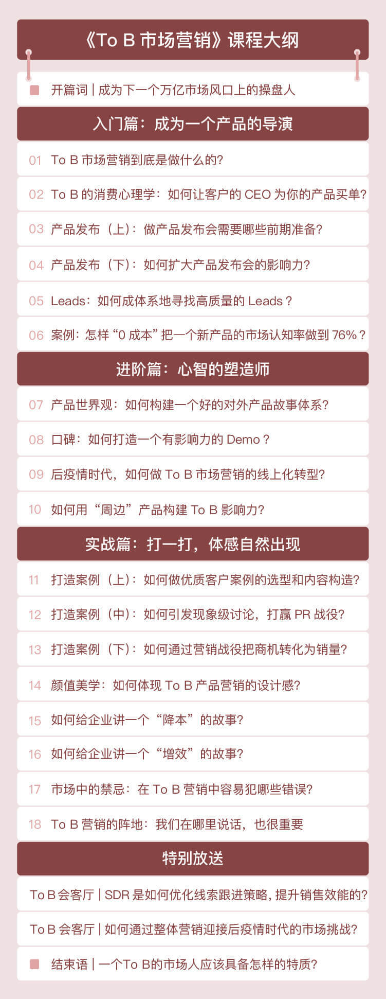

- 00 开篇词 成为下一个万亿市场风口上的操盘人.md.html
- 01 To B市场营销到底是做什么的？.md.html
- 02 To B消费心理学：如何把握客户CEO心理，让他买单？.md.html
- 03 第一印象（上）：如何策划一场产品发布会？.md.html
- 04 第一印象（下）：如何策划一场产品发布会？.md.html
- 05 Leads：如何成体系地寻找高质量的Leads？.md.html
- 06 案例：怎样0成本把一个新产品的市场认知率做到百分之76？.md.html
- 07 产品世界观：如何构建一个好的对外产品故事体系？.md.html
- 08 口碑：如何打造一个有影响力的Demo？.md.html
- 09 后疫情时代，如何做To B市场品牌内容的线上转型？.md.html
- 10 如何用“周边”产品构建To B影响力？.md.html
- 11 打造案例（上）：如何做优质客户案例的选型和内容构造？.md.html
- 12 打造案例（中）：如何引发现象级讨论，打赢PR战役？.md.html
- 13 打造案例（下）：如何通过营销战役把商机转化为销量？.md.html
- 14 颜值美学：如何体现To B产品营销的设计感？.md.html
- 15 如何给企业讲一个“降本”的故事？.md.html
- 16 如何给企业讲一个“增效”的故事？.md.html
- 17 市场中的禁忌：To B营销中容易犯哪些错误？.md.html
- 18 To B营销的阵地：我们在哪里说话，也很重要.md.html
- To B会客厅 SDR是如何优化线索跟进策略，提升销售效能的？.md.html
- To B会客厅 如何通过整体营销迎接后疫情时代的市场挑战？.md.html
- 结束语 一个To B的市场人应该具备怎样的特质？.md.html
- 捐赠
00 开篇词 成为下一个万亿市场风口上的操盘人
你好，我是曹林，一个在To B行业里摸爬滚打了 9 年的老兵。
我在大厂负责过整个产品市场的工作，经历了从IaaS到SaaS层几乎所有产品的上市、发布工作，也曾经负责了许多企业级的科技影响力项目，以及各个领域的事件营销。
工作这么多年，身边朋友问我最多的一个问题就是：To C市场和To B市场到底有什么区别？
我知道，大家跑来问我这些问题，不是为了长知识，而是心里有更多、更具体的困惑：我到底要不要转To B市场？做To B市场品牌有啥方法论吗？我能不能快速掌握？从事To B市场到底有没有前途？……
这些问题回答得多了，我就想系统地把这些答案归纳出来，写一下我对这个行业的理解，帮助正在从事或打算从事To B市场品牌行业的朋友，更好地理解To B市场品牌的方法论，尽量少走一些弯路。
ToB产业互联网是新风口
那咱们就先来说说To C的市场和To B的市场的本质区别，我认为这分两个层次。

首先，这个区别是由企业提供的产品或者服务面对的受众所决定的。一个是面向终端消费者（To C），一个是面向企业（To B）；一个是消费品（To C），一个是生产力工具（To B）。这个区别导致了我们的目标不同、方法不同。
而在过去的几年里，我兴奋地看到，To B的产业互联网正在快速崛起。
2020年是一个特殊的年份，这一年，数字化的进程在众所周知的原因下驶入了快车道。整个互联网行业，从消费互联网向产业互联网（消费互联网指的是服务消费者的互联网业务，例如我们经常会看到的美团等；产业互联网是指的以物联网、大数据、人工智能、云计算为代表的服务企业的互联网形态）转型的新风口，曙光乍现。AWS、微软等云计算基础设施股价屡创新高，Zoom、Salesforce等新兴的To B平台股值屡屡突破千亿。
我们正站在一个新时代的门口，可以预见的是，在接下来的5～10年里，To B的产业互联网将成为下一个充满机遇的“移动互联网”。对于我们职场人来说，抓住一个核心的风口，选择的重要性不言而喻，所以越来越多的同学投身其中。
其次，To C市场品牌和To B市场品牌的购买驱动力不同。

To C的市场品牌，有诸多“教父级”的企业，例如宝洁公司（P&G），他们为今天整个行业创造了一整套完整的玩法：购买驱动力的核心是消费主义驱动和欲望驱动。这套玩法是公式级别的，运用的是不断放大人们欲望的手段。怎么理解呢？举一个简单的例子：用了某洗发水后，拥有一头乌黑柔顺头发的女生必然遇见阳光帅气的男孩。
但是对于To B市场来说，今天无论是以IBM/GE/Intel等传统厂商为代表的“合作伙伴+生态+行业”的玩法，还是以国内产业互联网公司“概念先行”的玩法，事实上它都是一个蓝海，目前都没有形成公式级别的玩法。也就是说，在这个所有人都在探索的阶段，对于我们职场人来说，这也是一片有职业发展空间的蓝海。如果你也想抓住这个风口，在这个行业里发展，就需要深入了解To B市场的核心购买驱动力。
那么整个To B市场的核心购买驱动力到底是什么呢？我总结了四个字，并会在后面的课程内容中不断地提到，那就是——降本提效。
你看，To B和To C的购买基本假设不同，这是整个市场品牌打法不同的基点。
在To B的市场品牌领域中，品牌心智的影响力构成可能和To C完全不同。我举个例子，To C的品牌心智的常规手段往往是找一个当红小生成为代言人，通过各种广告来反复包装塑造。
而To B的品牌心智更可能是由技术领先性构成的，也可能是由某一项功能点，例如安全特性、合规特性以及开发者关系，甚至还有开源社区贡献度构成的。因为To B的市场品牌影响的目标主体是企业，而企业的运行本身就是极其理性的。
基于这个核心购买驱动力的差异，从To C到To B，其实很多同学是不太适应的，是很痛苦的，我刚刚转型的时候也是如此。
比如，很多市场人喜欢讲“洞察”这个词，但是在To B的市场品牌里，我认为可能用“群体意识”这个词更为贴切。因为从本质上来说，To B的市场品牌要影响的主体，其实是CEO/CFO/CTO/架构师/一线技术人。使这些人形成共同的群体意识心智，才能实现我们商业诉求。
再比如，你会发现你连最基础的事情都很难进行。现在假设你的产品市场营销有一个卖点，叫做“可以接入超过20种数据类型”。请问，你该如何通过一个创意，把这个内容转换成市场能接受的语言呢？
当你好不容易搞懂了超过20种数据类型到底是哪些类型、有什么用，并且想出一个绝妙的idea的时候，你会发现，相对于你的市场语言，你的用户可能更热爱平实的技术语言，这时你又该怎么办呢？
如何抓住To B市场的核心？
不要着急，这门课，我就带你来解决这个问题，让你了解到“To B市场之美”。到时候，你会发现，原来这里另外有一番天地。面向你的客户，讲好你的价值主张、产品能力，并探讨产品作为生产力本身对企业发展的帮助，最后你一定会收获另外一种成就感。
基于这样的目标，在这门课程中，我不想和你探讨如何去做一场活动，如何去做一个项目，因为这些不是最难的，你也很容易把自己以往的经验复用起来；而是想告诉你怎样去实现“降本提效”，直接带你深入了解ToB市场营销的核心方法：围绕客户需求和产品不断地生产内容，通过内容影响企业心智。
我会围绕To B产品的市场内容方法论，来与你探讨产品市场的做法，带你掌握一个优秀的To B市场人最核心的部分。
在整门课程中，我特别设计了一个虚拟案例，我们会围绕一家叫做“极客云”的云计算公司展开，把它在“从小B向大B转型”的过程中，遇到的一些问题、困惑、挑战，通过实战演绎出来。
下面我就介绍下课程设计。整个课程分为三个模块。

第一模块讲基础内容，我会手把手带你成为一个产品的导演。对于一个To B的市场同学来说，如何带着单个产品完成产品的上市工作，并建立影响力和心智，最终寻找到客户，这个是我们的一个最基本的技能。在这个部分，所有的练习都是围绕一个产品来进行的，通过反复练习，你可以把单个产品如何进行市场化的工作吃透。
第二模块讲的是进阶的内容，目标是让你成为一个心智的塑造师。任何一个公司都不会是单一的产品驱动的，一定是多产品齐头并进的。我们需要把这些所有的产品打包起来，形成一个整体的产品市场认知。那我们具体应该怎么做呢？举个例子，我们要如何通过制造一个Demo，进行To B领域的事件营销呢？在后疫情时代，如何通过数字化进行线上的心智塑造？这些都是我们要做的。在这个部分，练习题的主要作用是围绕今天我们如何在To B市场上通过产品作为抓手，塑造公司在市场上的心智影响力进行的。
第三模块我会着重讲解实践案例，打一打，体感自然会出现。我会围绕产品市场工作中的一些实践，比如，如何做优质的客户案例，如何去建设To B产品品牌的设计感，以及如何围绕前面的基础内容给企业讲一个降本提效的故事。这个阶段的练习，是围绕我们在ToB产品市场品牌领域遇到的一些打法、实践，交叉性地解决一些市场工作中的问题。
最后，我想跟你谈谈一个To B营销人应该具备的个人特质。To B的市场具有周期长、决策复杂的特点，例如，一个企业的采购周期往往是以“年”为单位的，那么我们如何不断地通过内容生产，touch到企业的选型决策和购买心智？能够做这样事情的小伙伴应该具备怎样的潜质？这是我们这门课想跟你分享的。
所以，当课程结束的时候，我期待你能够通过这套心法，能对讲产品故事、产品体系故事有充分的了解，并能对“从产品上市的市场品牌策略，到对外的整体市场打法”有一些体感，然后不断结合实战，成为一个优秀的To B市场品牌人。希望你能成为一个会讲有吸引力的“故事”，并通过“故事”影响企业心智的人。
有统计数据认为，到2021年，中国整个产业互联网年增速将超过50%。
这个数字对我们To B市场人意味着什么呢？这意味着在这个空前增长的前夜，在这个万亿市场徐徐拉开序幕的时刻，成为下一个万亿市场风口上的操盘人，既是人生价值的实现，也是职业生涯的新篇章。
希望你能够和我一起，进入这个行业，了解这个行业，在这个行业里开花结果！
© 2019 - 2023 Liangliang Lee. Powered by gin and hexo-theme-book.